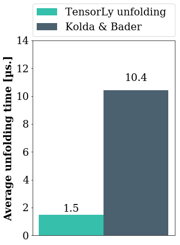
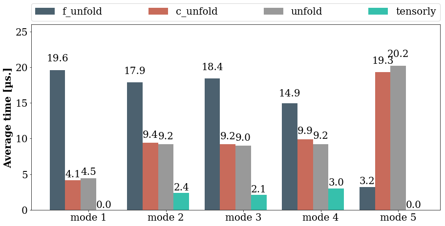

Tensor Unfolding
A look at tensor unfolding and its different definitions. We go through their mathematical properties, and python implementation with NumPy.
It is hard, if not impossible, to produce good software in Machine Learning without touching both programming and mathematics. Implementation of tensor unfolding is a very good example of that.
Tensor unfolding, or matrization, is a fundamental operation and a building block for most tensor methods. Considering a tensor as a multi-dimensional array, unfolding it consists of reading its element in such a way as to obtain a matrix instead of a tensor. mode-k unfolding is obtained by considering the \(k^{th}\) mode as the first dimension of a matrix and collapsing the other into the other dimension of that matrix. For a tensor of size \((I_1, I_2, \cdots, I_n)\), the k-mode unfolding of this tensor will be of size \((I_k, I_1 \times \cdots \times I_{k-1} \times I_{k+1} \cdots \times I_n)\). There are different ways of doing this, differing by the order in which the dimensions are collapsed, and each definition impacts the mathematical properties and the performance.
In TensorLy, to offer competitive speed, we had to depart from the traditional definition of unfolding to a formulation offering both better performance in NumPy and nice mathematical properties.
Performance comparison in NumPy
To compare the performance of the various implementations of tensor unfolding in NumPy using both defitions, we timed them on a tensor of size \((100, 10, 15, 10, 100)\), for each mode. This graph presents the average accross the modes of the unfolding time (obtained using the timeit module):

If you want more details on the implementations, read on!
Unfolding as defined by Kolda and Bader
Formal defintion
The most common definition of unfolding is the one defined and popularised by the seminal of Kolda and Bader (if you are interested, read their comprehensive paper "Tensor Decompositions and Applications"in SIAM REVIEW, 2009).
We will call that definition of unfolding, that of... Kolda&Bader! They define unfolding as follows:
Let \(\tilde X \in \mathbb{R}^{I_1 \times I_2 \times \cdots \times I_N}\) be a size \((I_1 \times I_2 \times \cdots \times I_N)\) tensor, then element \((i_1 \times i_2 \times \cdots \times i_N)\) of \(\tilde X\) maps to element \((i_n, j)\) of \(\tilde X^{Kolda}_{[n]}\), the n-mode unfolding of \(\tilde X\), with:
$$\begin{aligned} j = 1 + \sum_{\substack{k=1\\ k \neq n}}^N \left[ (i_k - 1) \prod_{\substack{m=1\\m \neq n}}^{k-1} I_m \right] \end{aligned}$$Note that if indexing starts at zero, the previous formula simplifies to:
$$\begin{aligned} j = \sum_{\substack{k=1\\ k \neq n}}^N \left[ i_k \times \prod_{\substack{m=1\\m \neq n}}^{k-1} I_m \right] \end{aligned}$$For those used to manipulating arrays, you might recognise here the Fortran ordering of elements!
Example
Note that we index the modes (dimensions) of a tensor from 0, not 1.
Let's take for this example the tensor \(\tilde X\) of size \((3, 4, 2)\) defined by the frontal slices as follows:
$$\begin{aligned} X_0 = \left[ \begin{matrix} 0 & 2 & 4 & 6\\ 8 & 10 & 12 & 14\\ 16 & 18 & 20 & 22 \end{matrix} \right] \end{aligned}$$and
$$\begin{aligned} X_1 = \left[ \begin{matrix} 1 & 3 & 5 & 7\\ 9 & 11 & 13 & 15\\ 17 & 19 & 21 & 23 \end{matrix} \right] \end{aligned}$$Then, according to Kolda's definition, its unfolding are given by:
mode-0 unfolding:
$$\begin{aligned} \tilde X^{Kolda}_{[0]} = \left[ \begin{matrix} 0 & 2 & 4 & 6 & 1 & 3 & 5 & 7\\ 8 & 10 & 12 & 14 & 9 & 11 & 13 & 15\\ 16 & 18 & 20 & 22 & 17 & 19 & 21 & 23\\ \end{matrix} \right] \end{aligned}$$mode-1 unfolding:
$$\begin{aligned} \tilde X^{Kolda}_{[1]} = \left[ \begin{matrix} 0 & 8 & 16 & 1 & 9 & 17\\ 2 & 10 & 18 & 3 & 11 & 19\\ 4 & 12 & 20 & 5 & 13 & 21\\ 6 & 14 & 22 & 7 & 15 & 23\\ \end{matrix} \right] \end{aligned}$$mode-2 unfolding:
$$\begin{aligned} \tilde X^{Kolda}_{[2]} = \left[ \begin{matrix} 0 & 8 & 16 & 2 & 10 & 18 & 4 & 12 & 20 & 6 & 14 & 22\\ 1 & 9 & 17 & 3 & 11 & 19 & 5 & 13 & 21 & 7 & 15 & 23\\ \end{matrix} \right] \end{aligned}$$Properties
Given a tensor \(\tilde{X} \in \mathbb{R}^{I_1 \times I_2 \times \cdots \times I_N}\) and its Tucker decomposition \([\!\![~\tilde{G};~\mathbf{U}^{(1)}, \cdots, \mathbf{U}^{(N)}~]\!\!]\), we can express the mode-\(n\) unfolding of \(\tilde{X}\) as:
\[\mathbf{X}_{[n]} = \mathbf{U}^{(n)} \mathbf{G}_{[n]} \left(\mathbf{U}^{(N)} \otimes \cdots \mathbf{U}^{(n+1)} \otimes \mathbf{U}^{(n-1)} \otimes \cdots \otimes \mathbf{U}^{(1)} \right)^T\]Notice the reverse order of the kronecker product of the matrix factors, that arises from the Fortran ordering of the elements when vectorising/folding/unfolding a tensor.
Unfolding in TensorLy
Formal definition
In TensorLy, given a tensor \(\tilde X \in \mathbb{R}^{I_1 \times I_2 \times \cdots \times I_N}\), we define the mode-n unfolding of \(\tilde X\) as a matrix \(\mathbf{X}^{TensorLy}_{[n]} \in \mathbb{R}^{I_n, I_M}\), with \(M = \prod_{\substack{k=1,\\\\k \neq n}}^N I_k\) and is defined by the mapping from element \((i_1, i_2, \cdots, i_N)\) to \((i_n, j)\), with
\[\begin{aligned} j = \sum_{\substack{k=1,\\k \neq n}}^N i_k \times \prod_{m=k+1}^N I_m. \end{aligned}\]Example
Using the same tensor \(\tilde X\) as defined previously, the unfoldings according to this new definition are given by:
mode-0 unfolding:
$$\begin{aligned} \tilde X^{TensorLy}_{[0]} = \left[ \begin{matrix} 0 & 1 & 2 & 3 & 4 & 5 & 6 & 7\\ 8 & 9 & 10 & 11 & 12 & 13 & 14 & 15\\ 16 & 17 & 18 & 19 & 20 & 21 & 22 & 23\\ \end{matrix} \right] \end{aligned}$$mode-1 unfolding:
$$\begin{aligned} \tilde X^{TensorLy}_{[1]} = \left[ \begin{matrix} 0 & 1 & 8 & 9 & 16 & 17\\ 2 & 3 & 10 & 11 & 18 & 19\\ 4 & 5 & 12 & 13 & 20 & 21\\ 6 & 7 & 14 & 15 & 22 & 23\\ \end{matrix} \right] \end{aligned}$$mode-2 unfolding:
$$\begin{aligned} \tilde X^{TensorLy}_{[2]} = \left[ \begin{matrix} 0 & 2 & 4 & 6 & 8 & 10 & 12 & 14 & 16 & 18 & 20 & 22\\ 1 & 3 & 5 & 7 & 9 & 11 & 13 & 15 & 17 & 19 & 21 & 23\\ \end{matrix} \right] \end{aligned}$$Properties
One of the nice things with this definition of the unfolding is that it offers nice properties.
Firstly, you might have recognised a C-ordering of the elements: as a result, this formulation leads to much more natural implementations and achieves better performance when using C-ordering of the elements (as numpy does by default). All that is now required is to move the required dimension into the first position and reshape the result into a matrix.
This definition also translates into more natural properties. For instance, given a tensor \(\tilde{X} \in \mathbb{R}^{I_1 \times I_2 \times \cdots \times I_N}\) and its Tucker decomposition \([\!\![~\tilde{G};~\mathbf{U}^{(1)}, \cdots, \mathbf{U}^{(N)}~]\!\!]\), we can express the mode-\(n\) unfolding of \(\tilde{X}\) as:
$$\mathbf{X}_{[n]} = \mathbf{U}^{(n)} \mathbf{G}_{[n]} \left(\mathbf{U}^{(1)} \otimes \cdots \mathbf{U}^{(n-1)} \otimes \mathbf{U}^{(n+1)} \otimes \cdots \otimes \mathbf{U}^{(N)} \right)^T$$Example with code, using TensorLy
In TensorLy, we simply define tensors as numpy arrays (which are already multi-dimensional arrays, i.e. tensors):
X = np.array([[[ 0, 1],
[ 2, 3],
[ 4, 5],
[ 6, 7]],
[[ 8, 9],
[10, 11],
[12, 13],
[14, 15]],
[[16, 17],
[18, 19],
[20, 21],
[22, 23]]])
You can quickly check the frontal slices as follows:
>>> X[..., 0]
array([[ 0, 2, 4, 6],
[ 8, 10, 12, 14],
[16, 18, 20, 22]])
>>> X[..., 1]
array([[ 1, 3, 5, 7],
[ 9, 11, 13, 15],
[17, 19, 21, 23]])
To unfold a tensor, simply use the unfold function from TensorLy:
>>> from tensorly import unfold
>>> unfold(X, 0)
array([[ 0, 1, 2, 3, 4, 5, 6, 7],
[ 8, 9, 10, 11, 12, 13, 14, 15],
[16, 17, 18, 19, 20, 21, 22, 23]])
Implementing tensor unfolding as defined by Kolda and Bader
In order to provide a good comparison of the different methods, we need a good implementation. However, tensor manipulation is not always very intuitive, as you will see. If you are curious as to the how and why of our implementations, read on!
Unfolding and ordering of the elements
Consider the tensor X defined above: you might be tempted to get the mode-0 unfolding as defined by Kolda and Bader by simply reshaping it into a matrix of size (3, 4*2). However, this is what happens if you do:
>>> X.reshape((3, -1))
array([[ 1, 13, 4, 16, 7, 19, 10, 22],
[ 2, 14, 5, 17, 8, 20, 11, 23],
[ 3, 15, 6, 18, 9, 21, 12, 24]])
What happened here?
Writing X.reshape((3, -1)) is equivalent to writing: X.reshape((3, -1), order='C'). In other words, the elements are read in C-order. Which means that the elements from the last axis are contiguous in memory and read first: you can see this by flattening the array in the default order (C order).
>>> X.ravel() # equivalent to X.ravel(order='C')
array([ 1, 13, 4, 16, 7, 19, 10, 22, 2, 14, 5, 17, 8, 20, 11, 23, 3,
15, 6, 18, 9, 21, 12, 24])
What you really want is to read the elements column-wise, i.e. in Fortran order: indeed, if you reshape the array in Fortran order, you obtain the mode-0 unfolding:
>>> X.reshape((3, -1), order='F')
array([[ 1, 4, 7, 10, 13, 16, 19, 22],
[ 2, 5, 8, 11, 14, 17, 20, 23],
[ 3, 6, 9, 12, 15, 18, 21, 24]])
Unfolding using reshaping in F-order
Based on the above discussion, a simple function to unfold a tensor would be the following:
def f_unfold(tensor, mode=0):
"""Simple unfolding function
Moves the `mode` axis to the beginning and reshapes in Fortran order
"""
return np.reshape(np.moveaxis(tensor, mode), (tensor.shape[mode], -1), order='F')
Yes but...
1) we work mostly in C-order 2) moving the axis and reshaping in Fortran order is slow if you manipulate arrays in C-order, which they are by default in numpy which leads us to... 3) always try to use the defaults users expect. This is the Principle of least astonishment.
Unfolding using reshaping in C-order: playing with strides and shape
As we said, what we want is the mode-axis first, then the other dimensions in the correct order. Let's take the example of mode-0 unfolding: when we form X.reshape((mode, 4*2)), the elements of the last mode come first, while the first mode should. (One way to look at it is that the reshaping returns a tensor of size \((I_k, I_n \times \cdots \times I_{k+1} \times I_{k-1} \cdots \times I_1)\) instead of \((I_k, I_1 \times \cdots \times I_{k-1} \times I_{k+1} \cdots \times I_n)\)):
>>> X.reshape((3, -1))
array([[ 1, 13, 4, 16, 7, 19, 10, 22],
[ 2, 14, 5, 17, 8, 20, 11, 23],
[ 3, 15, 6, 18, 9, 21, 12, 24]])
To correct this, we need to re-arange the dimensions of the tensor before reshaping.
In Pseudo code:
function
unfold(tensor, mode=k):Input: tensor of size \((I_1, \cdots I_n)\) to unfold in mode \(k\).
Steps:
Put the \(k^{th}\) axis of
tensorfirst:
\((I_1, \cdots I_n) \rightarrow (I_k, I_1 \times \cdots \times I_{k-1} \times I_{k+1} \cdots \times I_n)\)Reverse the order of the remaining axis of
tensor:
\((I_k, I_1 \times \cdots \times I_{k-1} \times I_{k+1} \cdots \times I_n) \rightarrow (I_k, I_n \times \cdots \times I_{k+1} \times I_{k-1} \cdots \times I_1)\)Reshape in C order:
reshape(tensor, (I_k, -1), order='C')
Actual code
Let's write an intermediate function to give us the reordering of the axis. For instance, for a tensor of order 5, the reordering corresponding to 2-mode unfoding should be:
(0, 1, 2, 3, 4) -> (2, 4, 3, 1, 0)
The function to do this is simple:
def reorder(indices, mode):
"""Reorders the elements
"""
indices = list(indices)
element = indices.pop(mode)
return ([element] + indices[::-1])
Using this, the actual function to unfold a tensor is the following:
from numpy.lib.stride_tricks import as_strided
def c_unfold(tensor, mode=0):
"""Returns the mode-`mode` unfolding of `tensor`
(modes start at `0`)
"""
shape = list(tensor.shape)
strides = list(tensor.strides)
fibers_len = shape[mode]
shape = reorder(shape, mode)
strides = reorder(strides, mode)
return as_strided(tensor, strides=strides, shape=shape).reshape((fibers_len, -1))
A shorter version
The previous code can be written equivalently in a much shorter way using numpy's built-in transpose function that takes care of changing the strides and the shape for us:
def unfold(tensor, mode=0):
"""Returns the mode-`mode` unfolding of `tensor`
"""
return np.transpose(tensor, reorder(range(tensor.ndim), mode)).reshape((tensor.shape[mode], -1))
Timing all these candidates
This is all well and good but which of these functions is actually faster: we have mentioned this already, but let us see what it is in practice. I have run each method on a tensor of size \((100, 10, 15, 10, 100)\), using the timeit function from the timeit module.

Refolding a tensor using the Kolda and Bader defition
Using the introduced TensorLy convention, folding is simply a reshaping in Numpy, followed by a moveaxis to invert the effect of the folding. For completeness, I will go over refolding an unfolded tensor using Kolda and Bader's definition, which are slightly more tricky to do on a tensor represented by a C-style array.
Once you understand how to properly unfold a tensor, refolding it is still fairly easy: we just need to put the dimensions composing the rows back in order and then switch the first dimension where it belong in \(k\)-th position.
With strides
We can use our knowledge on the ordering of the elements in the rows of the matrix to directly set the strides and the shape. Knowing the size of an element (in bytes), and the number of elements per dimension, we can easily determine the number of bytes to skip to go to the next dimension (strides):
def c_fold(unfolded, mode, shape):
"""Returns the folded tensor of shape `shape` from the `mode`-mode unfolding `unfolded`.
"""
column_size, element_size = unfolded.strides
column_dimensions = list(shape)
# the mode-dimension is contained in the columns
column_dimensions.pop(mode)
# the elements of a row are ordered as the first dimension, then the 2nd, etc
# to read the first, skip 0 elements
# to read the second dimension, skip n_elements_first_dimension, etc.
column_dimensions = [1] + np.cumprod(column_dimensions)[:-1].tolist()
# number of bytes to skip to go from one element to another
strides = [d * element_size for d in column_dimensions]
# To go to the next element in dimension mode, we go to the next line of the unfolded tensor
strides.insert(mode, column_size)
return as_strided(unfolded, strides=strides, shape=shape)
Concise solution
Again, it is faster and clearer to let numpy do the work. We first reshape the unfolded tensor into a tensor after the transposition was done. Then we undo the transpose:
def fold(unfolded, mode, shape):
"""Returns the folded tensor of shape `shape` from the `mode`-mode unfolding `unfolded`.
"""
unfolded_indices = reorder(range(len(shape)), mode)
original_shape = [shape[i] for i in unfolded_indices]
unfolded = unfolded.reshape(original_shape)
folded_indices = list(range(len(shape)-1, 0, -1))
folded_indices.insert(mode, 0)
return np.transpose(unfolded, folded_indices)
Final words
By simply redifining the unfoding operator we were able to gain a significant speedup. Tensor unfolding is ubuquitous in multi-linear algebra, used in all kind of algorithms from higher order SVD to tensor regression and the speedup translates into faster algorithms. Not only that it also translates into nice mathematical properties and a natural implemenation in Python.